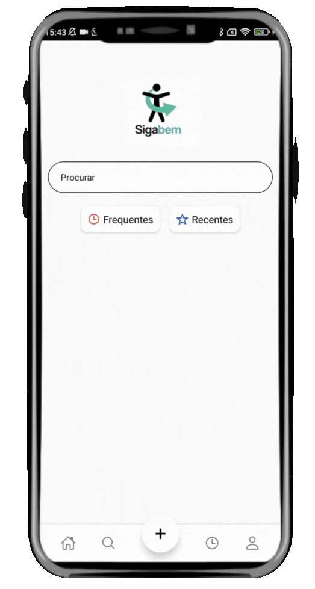
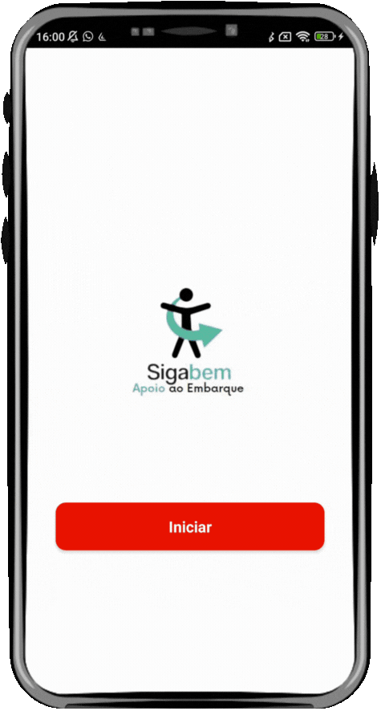

Passo 1: Solicitação

O usuário com deficiência solicita o apoio na parada usando o Sigabem App ou acionando o Dispositivo Físico (Sigabem Stop) instalado no local.

No Brasil, 18,6 milhões de cidadãos convivem com alguma forma de deficiência (IBGE, 2023). Para este público, o acesso ao transporte público ainda é marcado por desafios complexos que impactam diretamente a autonomia, a segurança e a dignidade do usuário:
A PCD frequentemente lida com a incerteza se o motorista do ônibus a identificará na parada a tempo, o que pode levar à temida "queima de parada" e longas esperas.

Há uma ausência de um canal direto e eficiente para que o usuário solicite apoio ao embarque e para que o órgão gestor receba feedback em tempo real sobre a qualidade do serviço.

Apenas 15% dos ônibus possuem rampas adequadas, e essa dificuldade estrutural é agravada pela falta de comunicação.

Pensando nesses obstáculos, criamos o Sigabem, com o objetivo de transformar o transporte público em um espaço inclusivo, eficiente e humano através de uma solução com Inteligência Geográfica e IoT (Internet das Coisas).
O usuário com deficiência solicita o apoio na parada usando o Sigabem App ou acionando o Dispositivo Físico (Sigabem Stop) instalado no local.

A solicitação é enviada para o sistema central (Sigabem Web), que a processa e a direciona para o veículo correto da linha correspondente.

O Dispositivo Embarcado no ônibus (Sigabem Bus) recebe a informação e alerta o motorista com um sinal visual e/ou sonoro sobre a necessidade de apoio na próxima parada.

O motorista, ciente da solicitação com antecedência, realiza a parada e o embarque de forma segura e eficiente, eliminando a 'queima de parada'.
Através dessa troca de dados em uma arquitetura composta por vários módulos, existe o Servidor: um componente que atua nos bastidores como o centro de controle, recebendo e gerenciando todas as informações do sistema. Essa conexão direta através de uma integração completa e concisa é o diferencial do Sigabem, pois elimina a abertura para falhas e atrasos de comunicação. Isso torna o ecossistema mais confiável e eficiente, em contraparte a soluções baseadas apenas em App.

O aplicativo móvel, desenvolvido em React Native (Android e iOS), é a principal interface do usuário e o ponto de partida para a autonomia no transporte.
Solicitação em Tempo Real: Permite a solicitação de embarque na linha desejada em tempo real, com confirmação imediata do atendimento;
Recursos de Acessibilidade: Inclui suporte nativo a leitores de tela (voice-over), ajuste de contraste e vibra call, focando na usabilidade para diferentes tipos de deficiência;
Comunicação Direta: Oferece um canal para registro de falhas, denúncias (quando não atendido), elogios e feedback direto ao órgão gestor de transporte;
Serviços de Consulta: Permite a consulta de linhas, horários e localização das paradas.

É o componente de hardware instalado nos veículos, responsável por receber o alerta e agir.
Tecnologia e Comunicação: Construído com ESP32, GPS e módulo 4G (SIM7600), utiliza o protocolo MQTT para comunicação leve, rápida e confiável;
Alerta ao Motorista: Recebe a solicitação e emite um alerta em tempo real, utilizando LED (aviso visual) e buzzer (aviso sonoro);
Performance: Possui um tempo de resposta médio de apenas 1,2 segundos;
Estrutura Adaptável: Sua arquitetura modular permite expansão futura para telas LCD e novos sensores, com um custo estimado de R$320 por unidade.

Este módulo garante a acessibilidade da solicitação mesmo para usuários que não utilizam o aplicativo móvel.
Arquitetura: Baseado em smartphones e tablets com software desenvolvido em React Native;
Função Central: Permite a solicitação de embarque em tempo real e a confirmação do atendimento, funcionando como um ponto físico de apoio;
Acessibilidade Reforçada: Dispõe de recursos como voice-over, contraste, leitores de tela e integração com teclado em Braille.


A ferramenta de software que transforma dados em estratégia para o órgão operador.
Gestão Completa: Plataforma completa para empresas e órgãos operadores, focada em visualização e análise georreferenciada de dados (SIG);
Monitoramento em Tempo Real: Permite o monitoramento da frota e dos pedidos de apoio, com filtros por tipo de deficiência e localização;
Análise Estratégica: Oferece um painel interativo para análise de indicadores, como linhas mais requisitadas por PCDs e paradas mais utilizadas;
Comunicação Operacional: Permite a comunicação direta com os usuários para o envio de avisos e notificações (ex: alteração de rota, parada desativada), sendo uma ferramenta estratégica de planejamento urbano inclusivo.


Após conhecer os módulos e o ciclo de comunicação em tempo real, fica claro o impacto transformador da nossa plataforma. O Sigabem não é apenas um sistema de apoio; ele é um agente de transformação urbana alinhado às demandas globais:

Inovação Social: Criação de soluções tecnológicas para desafios reais da sociedade, focadas na inclusão e na autonomia de milhões de brasileiros.

Cidades Inteligentes: Construção de infraestrutura urbana conectada, humana e acessível para todos os cidadãos.

Políticas Públicas: Geração de dados que podem informar e aprimorar políticas de mobilidade, inclusão e gestão do transporte.

Alinhamento Global: Resposta direta à Agenda 2030 (ODS) e à Lei Brasileira de Inclusão (LBI).
Nosso compromisso é ir além da tecnologia, garantindo que a pesquisa do IFPE Campus Recife se traduza em segurança, dignidade e autonomia para todos os usuários do transporte público.